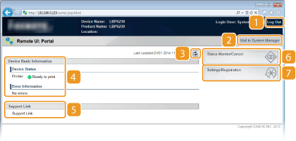
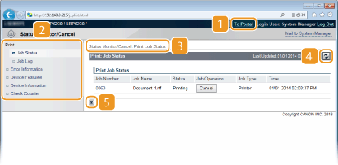

0KU8-037
Esta seção descreve as telas principais do Remote UI.

 [Log Out]
[Log Out]Sai do Remote UI e retorna à página de logon.
 [Mail to System Manager]
[Mail to System Manager]Exibe uma janela para criar um e-mail ao administrador do sistema. As informações de contato do administrador do sistema estão especificadas em [System Manager Information] em [System Management].
 Ícone Atualizar
Ícone AtualizarAtualiza a página atual.
 Device Basic Information
Device Basic InformationExibe o status atual da impressora e informações de erro. Se ocorreu um erro, um link para a página de informações de erro será exibido.
 Support Link
Support LinkExibe um link de informações de suporte, como especificado em [Device Information] em [System Management].
 [Status Monitor/Cancel]
[Status Monitor/Cancel]Exibe a página [Status Monitor/Cancel]. Você pode usar esta página para verificar o status de impressão atual, cancelar o processo de impressão e ver um histórico dos trabalhos de impressão.
 [Settings/Registration]
[Settings/Registration]Exibe a página [Settings/Registration]. Quando você acessar o Modo de Administrador do Sistema, você usa esta página para alterar as configurações da impressora. Alterando as configurações da impressora

[To Portal]Retorna à Página do Portal (página principal).
MenuClique em um item para exibir o conteúdo na página à direita. Gerenciando documentos e verificando o status da impressora
Navegação estruturalIndica uma série de páginas que você abriu para visualizar a página atualmente exibida. Você usar este recurso para verificar qual página é exibida atualmente.
Ícone AtualizarAtualiza a página atual.
Ícone AcimaMove para o topo da página que foi percorrida para baixo para visualização.
 [To Portal]
[To Portal]Retorna à Página do Portal (página principal).
MenuClique em um item para exibir o conteúdo na página à direita. Alterando as configurações da impressora
Navegação estruturalIndica uma série de páginas que você abriu para visualizar a página atualmente exibida. Você usar este recurso para verificar qual página é exibida atualmente.
Ícone AcimaMove para o topo da página que foi percorrida para baixo para visualização.
|
|
|
Sobre [System Management Settings]
Você pode alterar as configurações do sistema somente quando estiver logado no modo de Administrador de Sistema.
Quando você acessar no modo usuário final, apenas [System Management] será exibido.
|